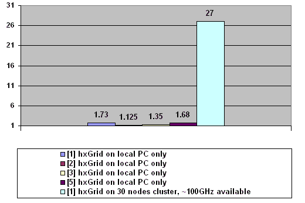

hxGrid and Distributed ATI Normalmapper
News
Overview
Download
Version History
Links
How to install ATI Normalmaper for hxGrid
Forum
23/08/2008 Article published on CodeProject.com.
23/08/2008 hxGrid is hosted on SourceForge now.
23/08/2008 hxGrid 1.09d has been released.
10/11/2007 hxGrid 1.09c has been released.28/08/2007 hxGrid 1.09a agent with Windows 2000 support has been released.
07/08/2007 hxGrid 1.09Beta agent for Windows 2000.
16/07/2007 hxGrid 1.09 has been released. This is very stable release without any known major bug. Windows Vista supported. See version history.
Read article "Distributed computing in small office":
(Russian): http://www.dtf.ru/articles/read.php?id=46196
(English): http://www.codeproject.com/KB/threads/hxgrid.aspx
hxGrid is distributed computing library for C++ and Delphi.
hxGrid library allows to run tasks on PC cluster, using idle time of Windows XP/ Windows Vista workstations.
All tasks are processed transparently for workstation user. Any workstation can reboot at any time, and this will not brake the computation.
This is an ideal solution for a small ofice (10+ PCs), when decicated cluster is not affordable.
Curently, ATI Normalmapper has been rewriteln for hxGrid and available for download.
Santiago Orgaz has released xNormal with hxGrid support.
hxGrid is used in Deep Shadows in internal game development tools.
Distributed Normalmapper shows 27 (!) times computation time improvement when run on cluster,
and ~1.5 times improvement when run on single workstation with multicore CPU.[1] Intel Pentium D Presler 3.0GHz
[2] Intel Pentium 4 2.8 GHz (HT)
[3] Intel Core 2 Duo 1.8GHz
[5] Athlon X2 3600+Normalmapper.exe -on carlow.nmf carhigh.nmf 2048 2048 test.tga
Working time, hours
Speed improvement, times

Project is hosted on SourceForge.org: download
Version historyVersion 1.09d
------------------------
- fixed critical bug: unable to complete last few tasks, if task takes more then 20 sec;
Version 1.09c
------------------------
hxGridUser and agent are changed in this release.
- new option: 'allowDiscardCoordinatorIP' - seel hxgrid.ini for description;
- fixed bug: hxGridUser is unable to run tasks, if single task size is larger then allowed memory usage for hxGridUser.
Version 1.09b
-----------------------
- added method "IGridUser->GetConnectionStatus()";
Version 1.09a
------------------------
- added agent support for Windows 2000;
Version 1.09
------------------------
- fixed critical bug: memory corruption in agent;
- fixed critical bug in scktcomp.pas delphi component (thread-safety issue);
- fixed critical bug: agent is unable to load task dll in Windows Vista;
- fixed thread-safety bug in agent and griduser (AddRef()/Release() should use InterlockedXXX);
- fixed memory leak in agent (IdUDPServer not freed);
- fixed IGridUser->GetSettings() and IGridUser->SetSettings() .h headers;
- IGridUser->isComplete(var complete:boolean) now returns TRUE
when no tasks is running (was: FALSE);
- hxgriduseddll.dll updated in PICalculator\C++ example;
- fixed AutoUpgrade example: unable to upgrade
due to relevance to current directory;
- fixed memory leak in GridGMP example;
- fixed DebugWrite bug: exeption on invalid strings causes agent to lost connection;
- fixed possible thread-safety issue in agent.filecache;
- new method: IAgent->GetSessionCacheDirectory();
- new method: IAgent->GetGlobalCriticalSection();
- new IGridUser setting: failed_agent_suspend_timeout;
- updated TAgentSettings in IAgent.h;
- IAgent.h and I_Agent.pas documented in English;
- Normalmapper_hxGrid_Setup installs 3ds MAX and Maya NMF export plugins;
Version 1.08a
------------------------
- article translated to English;
- headers are documented in English;
- cancellation support;
- fixed bug in IAgent->GetData();
- fixed bug: freezing on 99.99%;
- fixed bug: lost tasks if IAgent->GetData() failed;
- fixed bug: hxgrid application is unable to work,
if workstation has not been rebuted more than 25 days;
- settings tuned for large IAgent->GetData() size;
- fixed GridGMP sample (all drawing is done in main thread);
- network and memory overload tracking: at the start of the session, too many agents request data from user. Library tracks network and memory load;
- GridGMP example shows cancellation support and progress display;
- ATI Normalmapper installer installs NMF export plugins to plugin directories of 3DS MAX and Maya;
- more accurate progress display in ATI Normalmapper;
- NMFExport plugins for Maya 7.0, 8.0 and 8.5 included;
Note: agent and coordinator are modified, but have the same interace versions.
Upgrade recommended (see Examples\Autoupgrade\);Version 1.08 beta
------------------------
- initial public release;
1. General-Purpose Computation Using Graphics Hardware
http://www.gpgpu.org/2. Ambient occlusion - From Wikipedia, the free encyclopedia
http://en.wikipedia.org/wiki/Ambient_occlusion3. NVIDIA CUDA Homepage
http://developer.nvidia.com/object/cuda.html4. Incredibuild by Xoreax software
http://www.xoreax.com/main.htm5. Globus Toolkit Homepage
http://www.globus.org/toolkit/6. Кластерная система Condor
http://www.osp.ru/os/2000/07-08/178077/7. MPICH2
http://www-unix.mcs.anl.gov/mpi/mpich/8. libGlass - distributed computing library
http://libglass.sourceforge.net/download.php9. Alchemy - distributed computing library
http://www.alchemi.net/index.html10. Программирование с использованием COM-подобных интерфейсов.
http://www.dtf.ru/articles/read.php?id=4499511. То, что вам никто не говорил о многозадачности в Windows
http://www.dtf.ru/articles/read.php?id=3988812. The GNU MP Bignum Library
http://gmplib.org/13. ATI Normalmapper
http://ati.amd.com/developer/tools.html14. Jedy Visual Code Library
http://homepages.borland.com/jedi/jvcl/15. PlayStation 2: Computational Cluster
http://arrakis.ncsa.uiuc.edu/ps2/cluster.php16. Unmodified Xbox Cluster
http://www2.cs.uh.edu/~bguillot/xbox/home.html17. Информационно-аналитический центр parallel.ru
http://www.parallel.ru/18. Распределенные вычисления: поиск лекарства от рака
http://www.3dnews.ru/reviews/software/cure-for-cancer/19. РАСПРЕДЕЛЕННЫЕ МОЗГИ
http://www.fuga.ru/articles/2003/01/distributed.htm20. Взлом NTV+ с помощью распределенных вычислений
http://www.xakep.ru/post/20600/default.asp21. Знаете ли вы, что большинство времени ресурсы компьютера используются менее чем на 5%?
http://distributed.ru/?what-is22. Распределенные вычисления с минимальными затратами
http://msk.nestor.minsk.by/kg/2002/07/kg20708.html23. Распределенные вычисления на FreePascal под Windows.
http://freepascal.ru/article//raznoe/20051207110629/24. Распределенные вычисления - паразитные вычисления
http://center.fio.ru/method/resources/judina/05-03/news/parazit.htm25. Sony рассматривает возможность продавать процессорное время PS3
http://www.gamasutra.com/php-bin/news_index.php?story=1347626. ZLIB
http://www.zlib.org27. NVIDIA Texture Tools 2 Alpha
http://developer.nvidia.com/object/texture_tools.html
28. GPU Mapper - similar tool running on GPU
http://gpum.codingcorner.net/
Back to main page.
How to install ATI NormalMapper for hxGrid
System requirements:
A couple of PCs running Windows XP SP1/SP2 or Windows Vista, connected via local network.
1. Download hxGrid Coordinator and install on any workstation in the local network. Coordinator should be installed only on one workstation in the local network. This PC should always be available to coordinate hxGrid.
2. Download hxGrid Agent and install on all workstations in the local network.The more PCs are running the agent, the more fater will hxGrid apps work.
3. Download ATI Normalmapper for hxGrid and install on any PC in the local network.No additional configuration is required.
hxGrid also can be used to utilize all CPU cores of single PC. In this case, Coordinator, Agent and ATI NormalMapper for hxGrid should be installed on this PC. If PC does not have network adapter with IP address, "Microsoft loopback adapter" can be installed and assigned some IP address. Typical dualcore PC can achieve 50-80% speed improvement.
Copyright (C) 2007 by Roman Lut